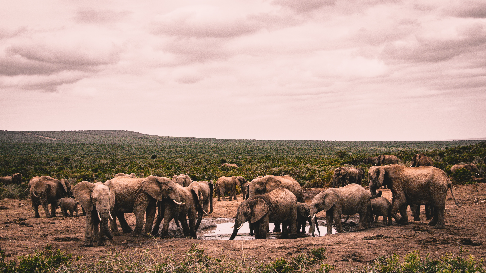
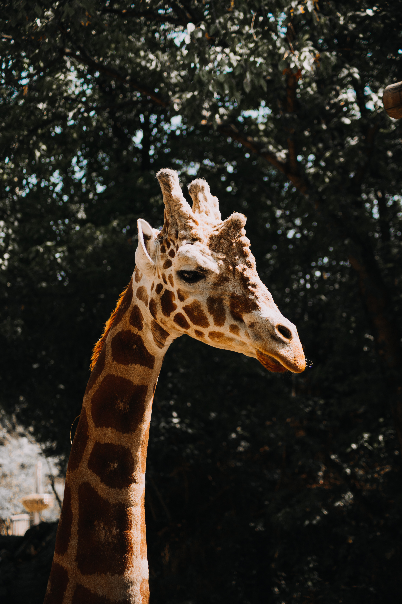
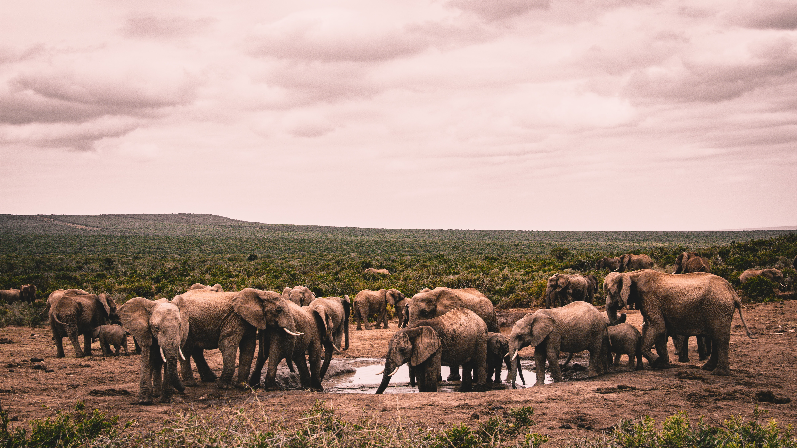
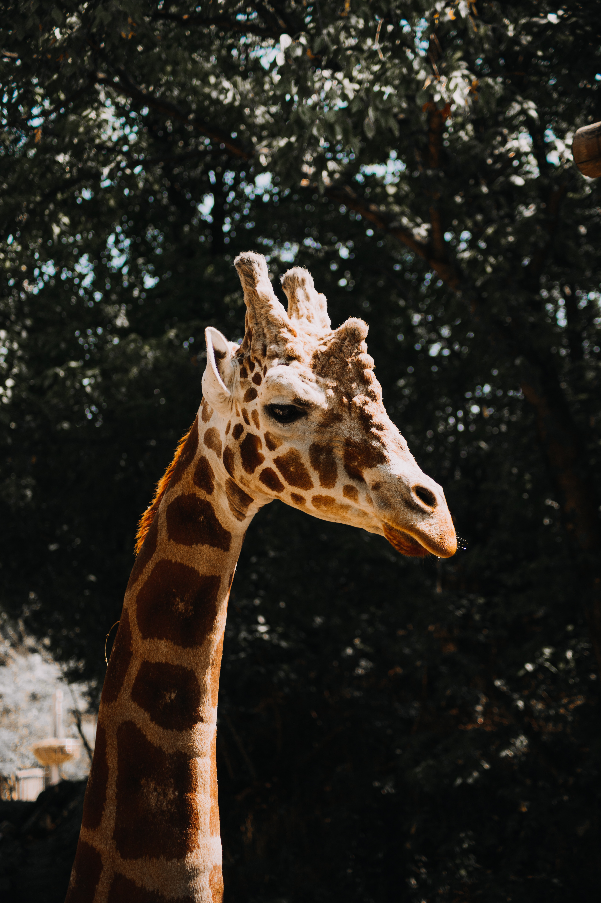
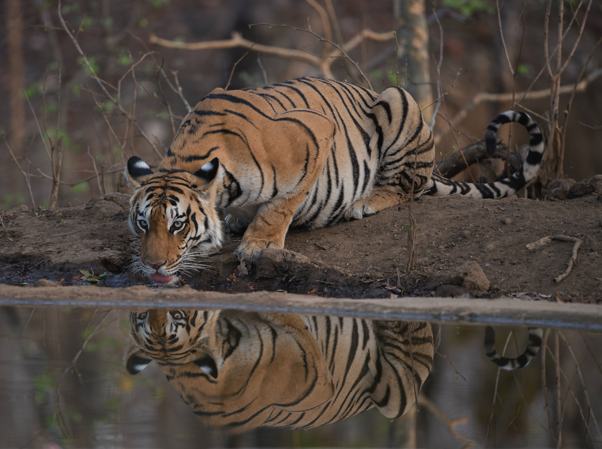
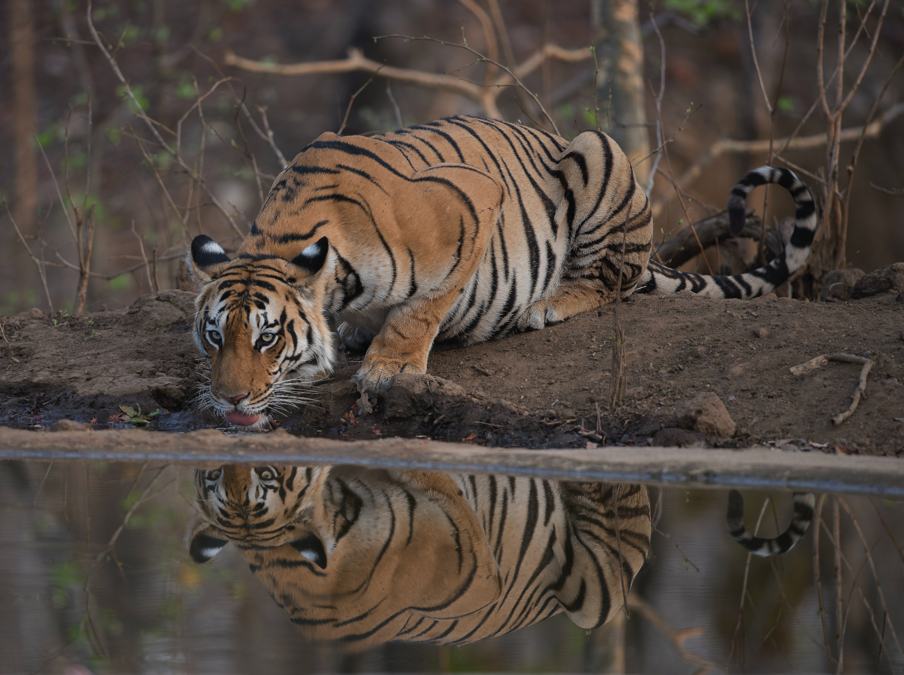
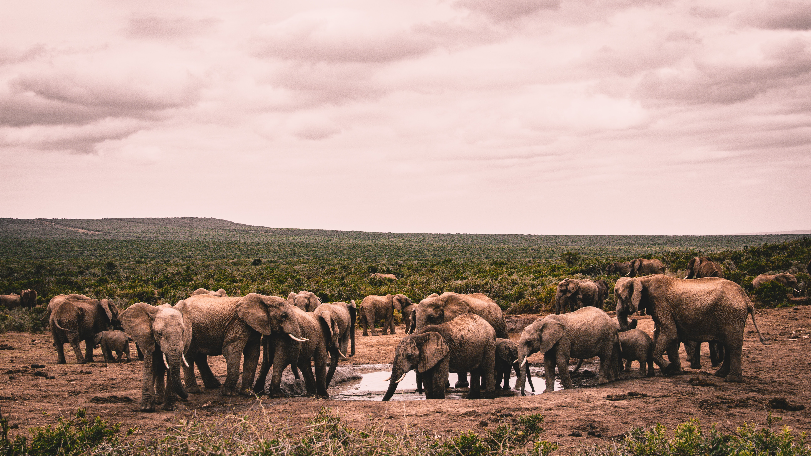
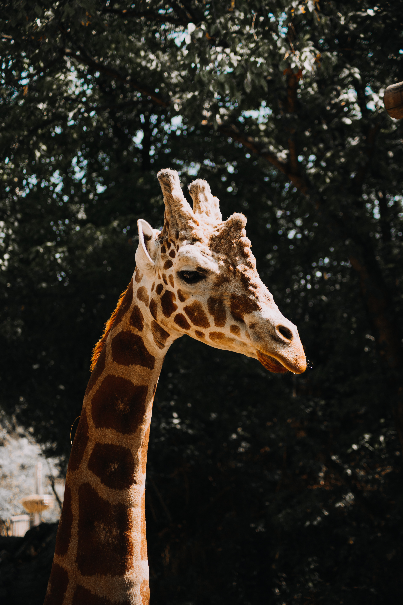
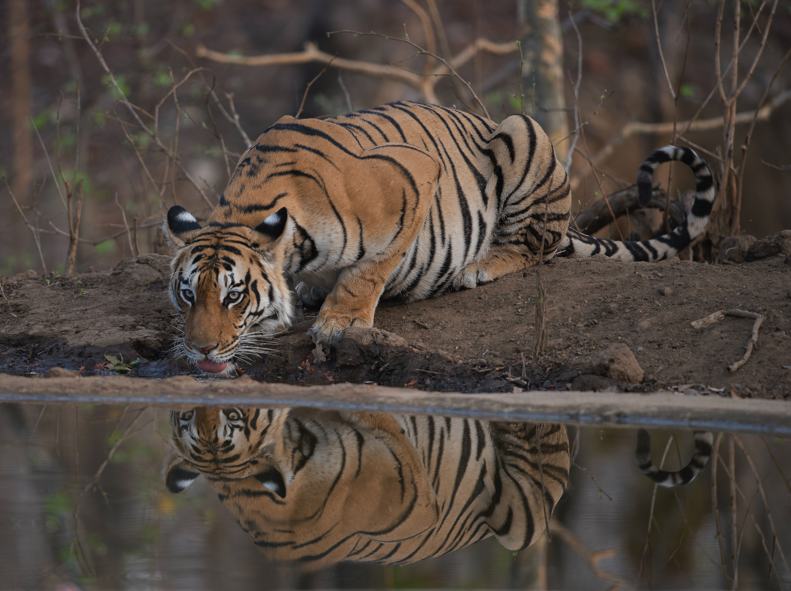

Requirements for wildlife photography
- Camera
- Telephoto lens
- Tripods
- Memory cards
- Rain covers
- Headlamps
My favourite Wildlife photos
 



 


According to the Oxford Dictionary, Photography is the art or practice of taking and processing photographs.There are many types of Photography, they include
In this article,We would be mainly focusing on Wildlife Photography.
According to Wikipedia, Wildlife Photography is a genre of photography concerned with documenting various forms of wildlife in their natural habitat.It is one of the most amazing photography genres. Professional wildlife photographers take pictures of the wild animals in their natural environment. It’s definitely a beautiful and meaningful photography career. But it also needs a lot of work, time and patience.
While wildlife photographs can be taken using basic equipment, successful photography of some types of wildlife requires specialist equipment, such as macro lenses for insects, long focal length lenses for birds and underwater cameras for marine life. However, a great wildlife photograph can also be the result of being in the right place at the right time and often involves a good understanding of animal behavior in order to anticipate interesting situations to capture in photography.As well as requiring photography skills, wildlife photographers may need field craft skills. For example, some animals and birds are difficult to approach and thus a knowledge of the animal's and birds behavior is needed in order to be able to predict its actions. Photographing some species may require stalking skills or the use of a hide/blind for concealment.



I'm Abdullahi and I’m a freelance writer, editor and proofreader specialising in wildlife and the environment.I write about wildlife and the environment in order to help people reconnect with nature, to benefit their mental wellbeing and also the world.I written for various print and digital magazines all over the world.From the very small gestures to huge life changing experiences. No judging! No lecturing! No negativity! Come on in, let’s talk!There is strength in numbers.
My blog is to educate people outside of the conservation setting.
Feel free to connect with me.Contact me @abdullahi.wildlifeblog@gmail.com
back to the top